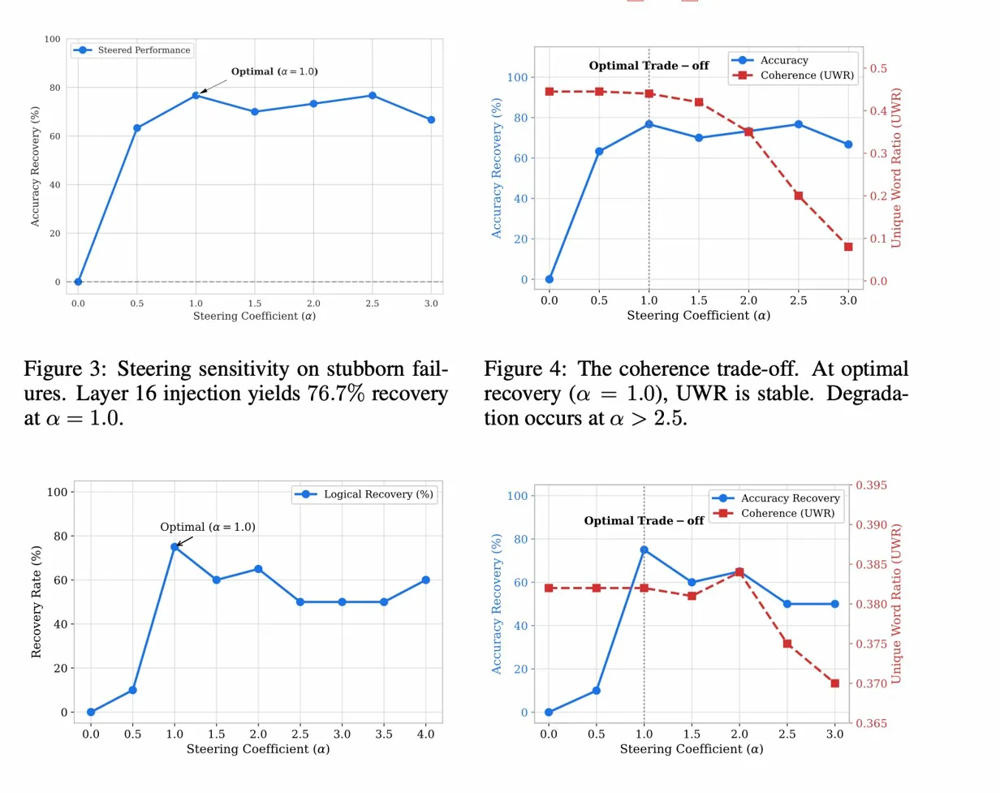
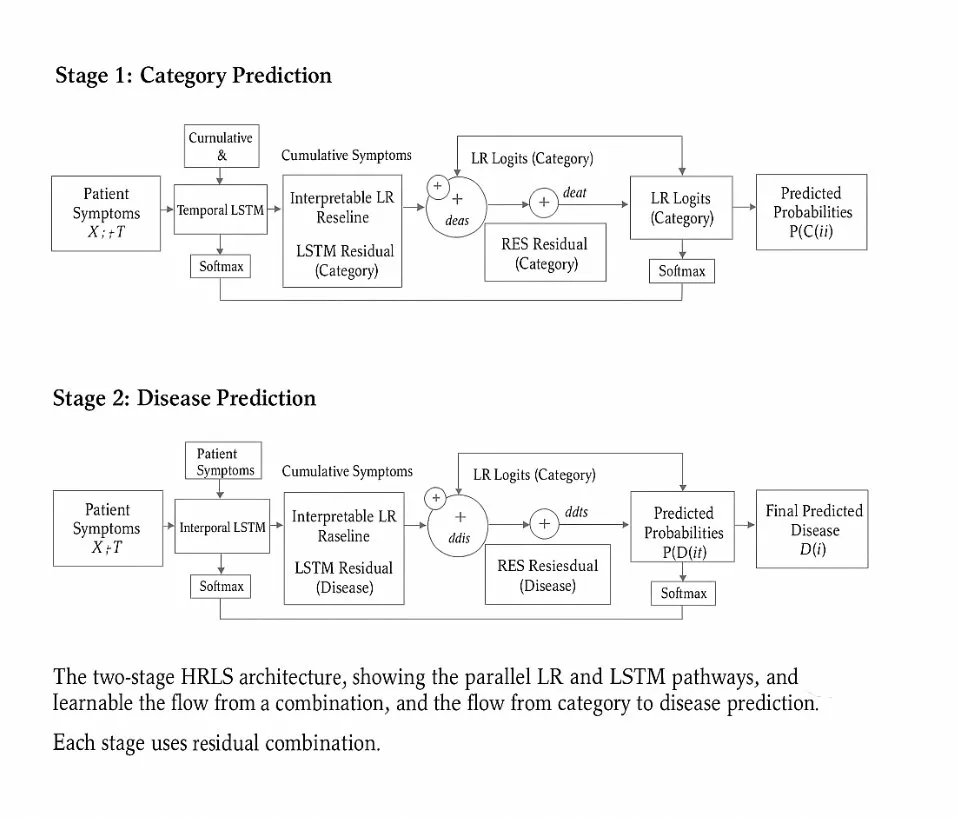
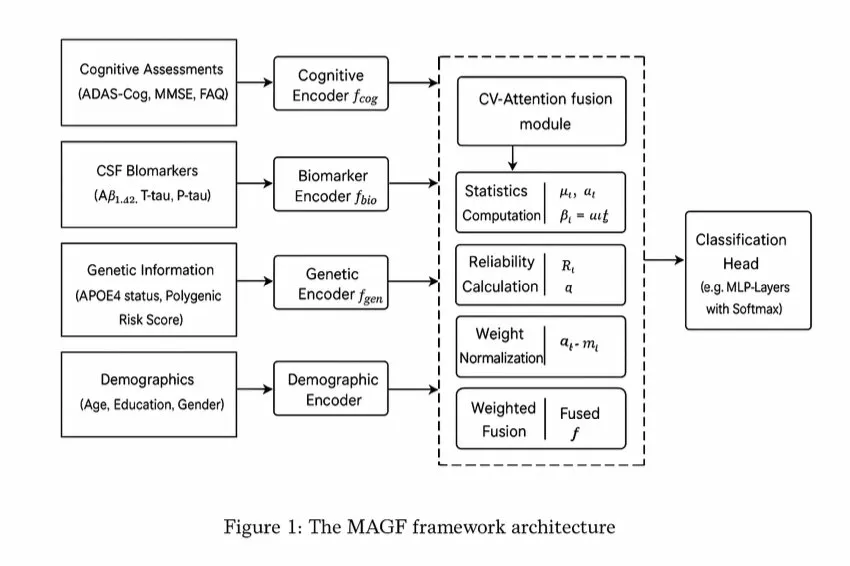

|
Harika Mahapatra I am an incoming MS in Computer Science student at NYU Courant. I’m currently interested in interpretability in machine learning, model optimization, and LLM behavior, especially how models represent knowledge internally and what they produce at inference time. More broadly, I’m curious about how to bridge this gap to build more reliable AI systems. Previously, I worked as a Software Engineer at Accenture, where I built data pipelines for large-scale energy grid systems ⚙️. It turned out to be a pretty good place to develop an obsession with things not breaking. Outside of work, I enjoy exploring indie music 🎧, especially The Smiths and The Cure, and learning to play the guitar 🎸. I’m currently in a battle with the F chord, mostly because I’ve realized my fingers are tragically too short for barre chords, but we keep going nonetheless. Email / CV / GitHub / OpenReview |

|
ResearchMy research focuses on interpretability in machine learning, particularly understanding failure modes in large language models and bridging the gap between internal knowledge and observed behavior. I aim to develop methods that make models more reliable, controllable, and aligned with their latent representations. |
|
 |
The Latent Truth: Knowledge–Behavior Gap in Logical Deduction via Activation Steering
Harika Mahapatra ICLR Workshop (under review) Large language models often produce incorrect outputs despite internally encoding the correct answer. This work formalizes this as a knowledge–behavior gap and shows that latent representations encode truth early, but fail at decoding. I introduce a directional activation steering method that recovers a significant portion of logical failures without degrading coherence. |
|
 |
HRLS: Interpretable Temporal Prediction for Clinical Decision Support
Harika Mahapatra NeurIPS WiML Workshop · IEEE Global AI Summit Designed hybrid temporal architectures for clinical prediction across multi-disease datasets. Introduced Temporal Explanation Robustness (TER), a metric to evaluate stability of explanations over time for reliable deployment in healthcare settings. |
|
 |
Statistically-Grounded Attention for Alzheimer’s Detection
Harika Mahapatra, Dr. A. V. Sriharsha AIML-CEB @ AJCAI · IEEE Global AI Summit Proposed a parameter-free attention mechanism for multimodal clinical data and demonstrated improved robustness and interpretability across heterogeneous features for Alzheimer’s detection. |
Selected Engineering Work
Data Pipeline Optimization for Energy Grid Systems
ML System for Clinical Recommendation |